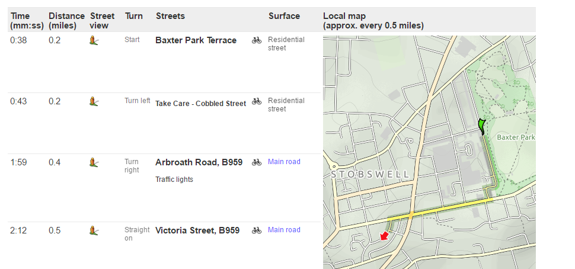

Cobble Map
A Dundee Cyclehack project. Map where the cobbled streets to help cyclists unfamiliar with an area plan their route based on the road surface.
Background
In Scotland many towns and cities still retain their old cobbled road surfaces, these are great to look at and keep the character of the place but can be pretty tricky on a bike - especially when it's wet.
So where are the cobbles?
The crowdsourced OpenStreetMap can already record road surface information but at the moment most streets aren't tagged. No problem though, it only takes a few seconds to tag a street as cobbled.
It may also be possible to use other sources of information to find out which streets are cobbled, for example crowdsourced from the Road Quality Hack, or from your local authority.
Check the guidance for OSM first though to check you can copy a data source, you can't use Google Street View to check if a street is cobbled as Google have copyright on those images and don't allow them to be re-used.
Once the roads are tagged in open street map anyone can use the data to highlight these streets, they could be used not just for cyclists or road users but to highlight historical parts of town. OpenStreetMap data is widely used in other apps and services such as Strava.
Making a Map
Taking it further
Once the road surface is recorded in Open Street Map it can be used in different ways, for example a Journey Planner could highlight a rough surface or offer cyclists the choice of tarmaced roads only.
Image Derived from CycleStreets Planner © Cyclestreets, Map Images OpenStreetMap contributors CC-by-SA